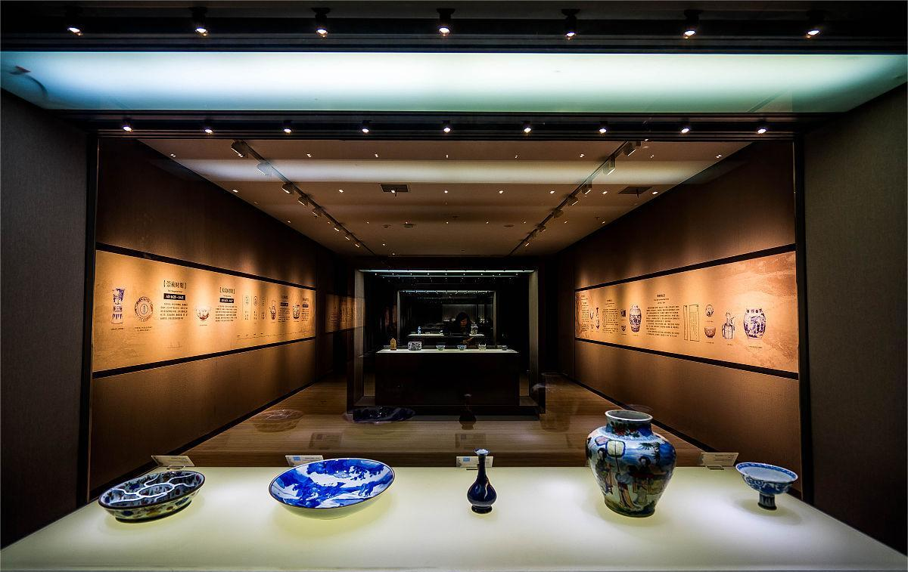
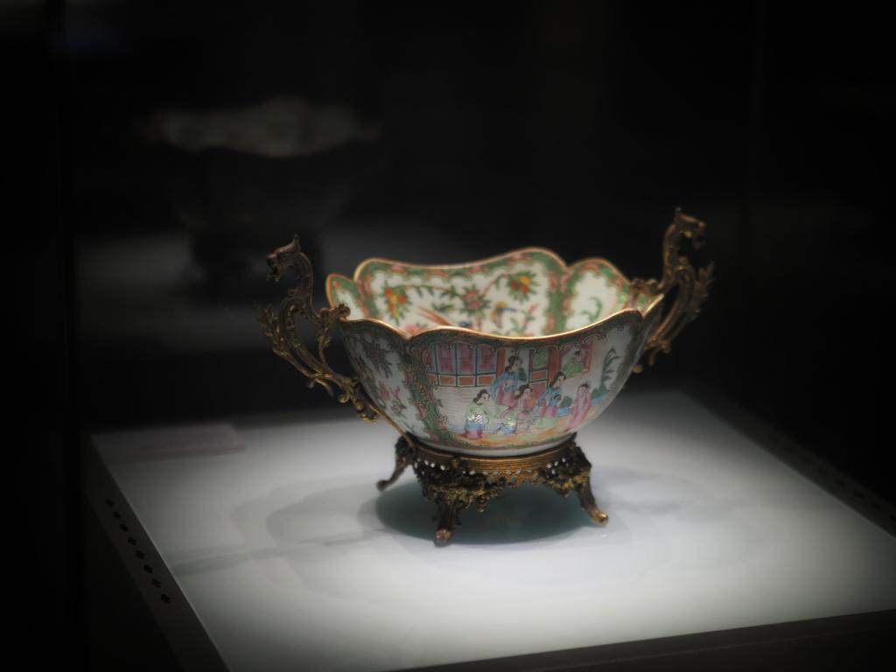
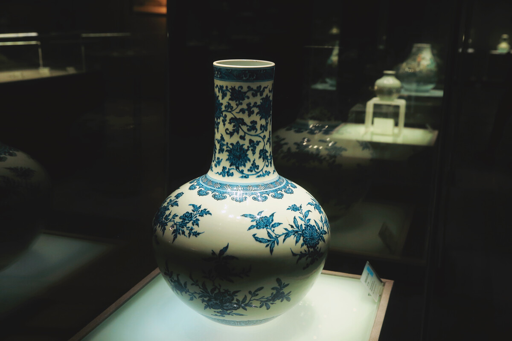
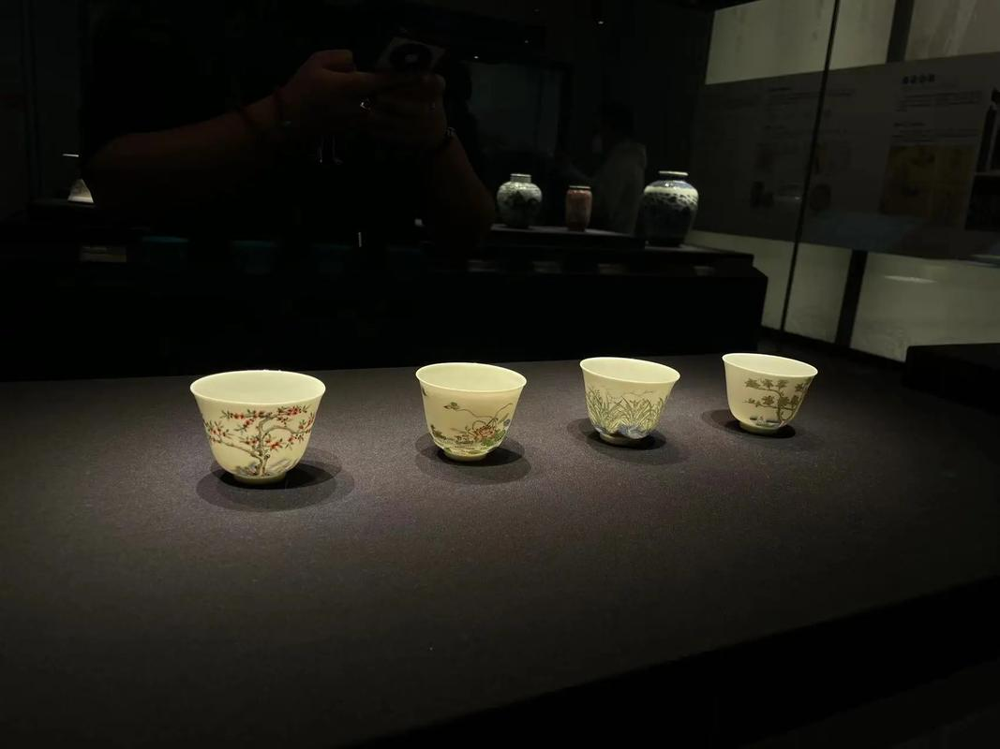

景德镇瓷器以白瓷为闻名，素有“白如玉，明如镜，薄如纸，声如磬”之称，品种齐全曾达三千多种品名。瓷质优良，造型轻巧，装饰多样。
在装饰方面有青花、釉里红、古彩、粉彩、斗彩、新彩、釉下五彩、青花玲珑等，其中尤以青花、粉彩产品为大宗，颜色釉为名产。
釉色品种很多，有青、蓝、红、黄、黑等类。仅红釉系统，即有钧红、郎窑红、霁红和玫瑰紫等，
均用“还原焰”烧成，产品驰名世界，是称誉世界的古代陶瓷艺术杰出代表之一。